Produção audiovisual com propósito. Excelência técnica a serviço da mensagem.
Assistir ao vídeoA RECED Produções nasce do hesed — o amor leal, constante e misericordioso de Deus — e se move pela música, pela imagem e pela excelência técnica para servir à igreja e à sua mensagem.
Conheça nossa história →{{ t.quote }}
Entre em contato e fale com a gente pelo WhatsApp. Vamos conversar sobre o seu projeto e como a RECED pode ajudar.
Fale com a gente →